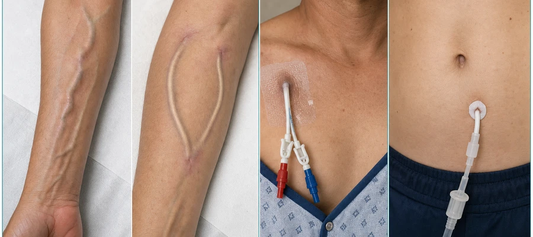
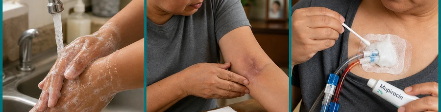
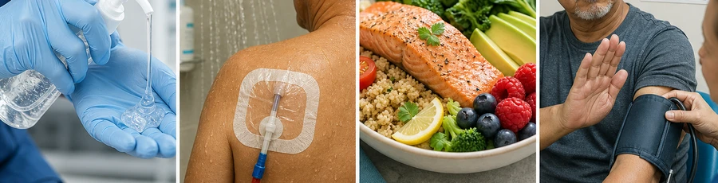
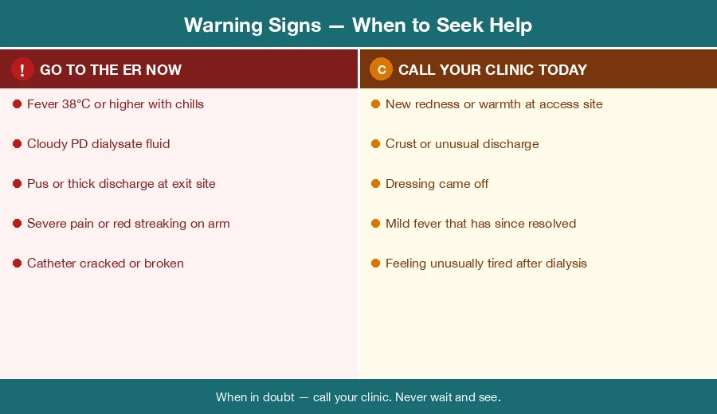
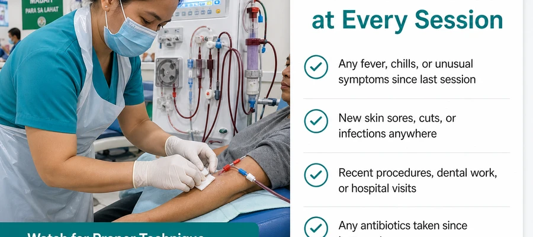

What Is a Dialysis Access?Ano ang Dialysis Access?Unsa ang Dialysis Access?Nano ing Dialysis Access?
Dialysis needs a way to reach your blood. Your access is the connection that makes this possible — every session, blood leaves through it, passes through the dialysis machine, and returns cleaned. There are four main types.Ang dialysis ay nangangailangan ng paraan upang maabot ang iyong dugo. Ang iyong access ang koneksyon na nagpapairal nito — bawat sesyon, lumalabas ang dugo sa pamamagitan nito, dumadaan sa dialysis machine, at bumabalik na malinis. Mayroong apat na pangunahing uri.Ang dialysis nagkinahanglan og paagi aron maabot ang imong dugo. Ang imong access ang koneksyon nga nagpaposible niini — matag sesyon, ang dugo mogawas pinaagi niini, moagi sa dialysis machine, ug mobalik nga malinis. Adunay upat ka nag-unang klase.Ing dialysis kailangan ning paraan para maabot ing dugu mu. Ing access mu ing koneksyon a nagpapairal niti — bawat sesyon, lumalabas ing dugu sa pamamagitan niti, dumadaan king dialysis machine, at bumabalik nang malinis. Mayroong apat a pangunahing uri.

AV Fistula
A surgeon connects an artery and a vein in your arm, usually at the wrist or elbow. Blood flowing through this connection creates a buzzing sensation called the "thrill." It is the best long-term access and takes 6–8 weeks to mature before it can be used. It has the lowest risk of infection of all access types.Ang isang siruhano ay nagkokonekta ng arterya at ugat sa iyong braso, karaniwang sa pulso o siko. Ang dugo na dumadaan sa koneksyon na ito ay lumilikha ng isang buzzing na sensasyon na tinatawag na "thrill." Ito ang pinakamainam na pangmatagalang access at tumatagal ng 6–8 linggo bago ito mapagamit. Mayroon itong pinakamababang panganib ng impeksyon sa lahat ng uri ng access.Ang usa ka siruhano nagkonekta og arterya ug ugat sa imong bukton, kasagarang sa pulso o siko. Ang dugo nga moagi niining koneksyon naghimo og buzzing nga sensasyon nga gitawag og "thrill." Kini ang labing maayo nga pangtagal nga access ug nagkinahanglan og 6–8 semana sa pag-mature una kini magamit. Adunay kini pinakaubos nga risgo sa impeksyon sa tanan nga klase sa access.Metung a siruhano nag-kokonekta ning arterya at ugat king braso mu, karaniwang king pulso o siko. Ing dugu a dumadaan king koneksyon na iti lumilikha ning isang buzzing a sensasyon a tinatawag na "thrill." Iti ing pinakamainam a pangmatagalang access at tumatagal ning 6–8 pue bago iti mapagamit. Mayroon iting pinakamababang panganib ning impeksyon sa lahat ning uri ning access.
AV Graft
A soft plastic tube connects an artery and a vein in the arm. It is ready for use sooner than a fistula (2–4 weeks) but carries a slightly higher infection risk because the plastic material can harbor bacteria more easily than your own blood vessel.Isang malambot na plastik na tubo ang nagkokonekta ng arterya at ugat sa braso. Handang gamitin ito nang mas maaga kaysa sa fistula (2–4 linggo) ngunit may bahagyang mas mataas na panganib ng impeksyon dahil ang plastik ay maaaring maglaman ng bakterya nang mas madali kaysa sa iyong sariling daluyan ng dugo.Ang usa ka humok nga plastik nga tubo nagkonekta og arterya ug ugat sa bukton. Andam kini gamiton mas sayo kay sa fistula (2–4 semana) apan adunay mas taas nga risgo sa impeksyon tungod kay ang plastik makasugod og bakterya mas dali kaysa sa imong kaugalingong daluyan sa dugo.Metung a malambot a plastik a tubo nag-kokonekta ning arterya at ugat king braso. Handa itong gamitin nang mas maaga kaysa king fistula (2–4 pue) ngem may bahagyang mas mataas a panganib ning impeksyon kakaugnayan ing plastik ay malyaring maglaman ning bakterya nang mas madali kaysa king sarili mung daluyan ning dugu.
Tunneled Catheter (Permcath)Tunneled Catheter (Permcath)Tunneled Catheter (Permcath)Tunneled Catheter (Permcath)
A two-lumen tube is placed under the skin of the chest and into a large vein near the heart. It is used when a fistula or graft is not yet ready or not possible. It carries the highest infection risk of all access types because it provides a direct path from the skin surface to the bloodstream.Ang isang two-lumen na tubo ay inilalagay sa ilalim ng balat ng dibdib at sa isang malaking ugat malapit sa puso. Ginagamit ito kapag ang fistula o graft ay hindi pa handa o hindi posible. Ito ang may pinakamataas na panganib ng impeksyon sa lahat ng uri ng access dahil nagbibigay ito ng direktang landas mula sa ibabaw ng balat patungo sa dugo.Ang usa ka two-lumen nga tubo gibutang ubos sa panit sa dughan ug sa usa ka dako nga ugat duol sa kasingkasing. Gigamit kini kon ang fistula o graft wala pa andam o dili posible. Adunay kini pinakataas nga risgo sa impeksyon sa tanan nga klase sa access kay naghatag kini og direktang agianan gikan sa nawong sa panit hangtud sa dugo.Metung a two-lumen a tubo inilalagay sa ilalim ning balat ning dughan at sa metung a malaking ugat malapit king puso. Ginagamit iti nung ing fistula o graft e pa handa o e posible. Iti ing may pinakamataas a panganib ning impeksyon sa lahat ning uri ning access kakaugnayan nagbibigay iti ning direktang landas bunga ning ibabaw ning balat patungo king dugu.
PD Catheter
A soft silicone tube passes through the abdominal wall into the belly cavity (peritoneal space). It is used for peritoneal dialysis, which is often done at home. Infection at the exit site, along the tunnel, or inside the belly (peritonitis) is the most serious complication of PD.Ang isang malambot na silicone na tubo ay dumadaan sa dingding ng tiyan patungo sa loob ng tiyan (peritoneal space). Ginagamit ito para sa peritoneal dialysis, na kadalasang ginagawa sa bahay. Ang impeksyon sa exit site, sa kahabaan ng tunnel, o sa loob ng tiyan (peritonitis) ang pinaka-malubhang komplikasyon ng PD.Ang usa ka humok nga silicone nga tubo moagi sa dingding sa tiyan ngadto sa sulod sa tiyan (peritoneal space). Gigamit kini para sa peritoneal dialysis, nga kasagarang buhaton sa balay. Ang impeksyon sa exit site, sa tibuok tunnel, o sulod sa tiyan (peritonitis) ang labing grabe nga komplikasyon sa PD.Metung a malambot a silicone a tubo dumadaan sa dingding ning tiyan patungo king loob ning tiyan (peritoneal space). Ginagamit iti para king peritoneal dialysis, a madalas ginagawa king bahay. Ing impeksyon king exit site, sa kahabaan ning tunnel, o sa loob ning tiyan (peritonitis) ing pinaka-malubhang komplikasyon ning PD.
Why infection is an emergencyBakit ang impeksyon ay isang emerhensiyaNgano nga ang impeksyon usa ka emerhensiyaBakit ing impeksyon metung a emerhensiya
Bacteria entering through a dialysis access go directly into your bloodstream during every dialysis session. What starts as a local redness can become a life-threatening bloodstream infection (sepsis) or endocarditis within hours. Do not wait to see if it gets better on its own.Ang mga bakterya na pumapasok sa pamamagitan ng dialysis access ay direktang pumupunta sa iyong dugo sa bawat sesyon ng dialysis. Ang nagsisimula bilang lokal na pamumula ay maaaring maging isang nagbabantang-buhay na impeksyon sa dugo (sepsis) o endocarditis sa loob ng ilang oras. Huwag maghintay upang makita kung gagaling ito nang kusa.Ang mga bakterya nga mosulod pinaagi sa dialysis access direktang moadto sa imong dugo sa matag sesyon sa dialysis. Ang nagsugod ingon lokal nga pagpula mahimong mahimong usa ka nagpadayon nga impeksyon sa dugo (sepsis) o endocarditis sulod sa pipila ka oras. Ayaw maghulat aron makita kon maulian kini sa kaugalingon.Ing mga bakterya a pumapasok sa pamamagitan ning dialysis access direktang pumupunta king dugu mu sa bawat sesyon ning dialysis. Ing nagsisimula bilang lokal a pamumula malyaring maging metung a nagbabantang-buhay a impeksyon king dugu (sepsis) o endocarditis sa loob ning ilang oras. Ala maghintay para makita nung gagaling iti nang kusa.
Daily CarePag-aalaga Araw-arawPag-atiman sa Adlaw-adlawPag-aalaga Araw-araw
Most access infections begin with small breaks in care. The habits below are your strongest defense.Karamihan sa mga impeksyon ng access ay nagsisimula sa maliliit na pagkabigo sa pag-aalaga. Ang mga gawi sa ibaba ang iyong pinakamalakas na depensa.Ang kadaghanan sa mga impeksyon sa access nagsugod sa gamay nga mga kakulangan sa pag-atiman. Ang mga batasan sa ubos ang imong pinakalig-on nga depensa.Karamihan king mga impeksyon ning access nagsisimula king maliliit a pagkabigo king pag-aalaga. Ing mga gawi sa baba ing pinakamalakas a depensa mu.

Fistula and GraftFistula at GraftFistula ug GraftFistula at Graft
- Inspect your access every morning — run your finger gently along it. You should feel the thrill (a buzzing or vibration). If the thrill is gone, call your dialysis center immediately.Suriin ang iyong access tuwing umaga — hayaan ang iyong daliri nang marahang tumakbo sa kahabaan nito. Dapat mong maramdaman ang thrill (isang buzzing o vibration). Kung wala na ang thrill, tumawag agad sa iyong dialysis center.Susihon ang imong access matag buntag — ipadagan ang imong tudlo nga hinay-hinay sa tibuok niini. Kinahanglan mabati nimo ang thrill (usa ka buzzing o vibration). Kon nawala na ang thrill, tawaga dayon ang imong dialysis center.Suriin ing access mu tuwing umaga — hayaan ing daliri mu nang marahang tumakbo sa kahabaan niti. Dapat mu maramdaman ing thrill (metung a buzzing o vibration). Nung wala na ing thrill, tumawag agad king dialysis center mu.
- Wash the access site with soap and water daily.Hugasan ang access site ng sabon at tubig araw-araw.Hugasi ang access site og sabon ug tubig adlaw-adlaw.Hugasan ing access site ning sabon at tubig araw-araw.
- Never allow blood pressure cuffs, blood draws, or IV lines on your access arm — this is an absolute rule, no exceptions.Huwag hayaang may blood pressure cuffs, pagkuha ng dugo, o IV lines sa iyong access arm — ito ay isang ganap na patakaran, walang pagbubukod.Ayaw tugoti og blood pressure cuffs, pagkuha sa dugo, o IV lines sa imong access arm — kini usa ka ganap nga lagda, walay eksepsyon.Ala hayaan a may blood pressure cuffs, pagkuha ning dugu, o IV lines king access arm mu — iti metung a ganap a panuntunan, walang eksepsyon.
- Do not wear tight clothing, wristwatches, or jewelry over or near the access site.Huwag magsuot ng masikip na damit, relo, o alahas sa ibabaw o malapit sa access site.Ayaw magsul-ob og mga masikpit nga bisti, relo, o alahas ibabaw o duol sa access site.Ala magsuot ning masikip a damit, relo, o alahas sa ibabaw o malapit king access site.
- Avoid sleeping directly on the access arm — this can compress blood flow and increase clot and infection risk.Iwasan ang pagtulog nang direkta sa access arm — maaari itong mag-compress ng daloy ng dugo at magpataas ng panganib ng pamumuo at impeksyon.Likayi ang pagkatulog direkta sa access arm — kini mahimong mag-compress sa agos sa dugo ug magpataas sa risgo sa pamumuo ug impeksyon.Iwasan ing pagtulog nang direkta king access arm — malyaring mag-compress iti ning daloy ning dugu at magpataas ning panganib ning pamumuo at impeksyon.
- Keep fingernails short and avoid scratching over needle puncture sites.Panatilihing maiksi ang mga kuko at iwasan ang pag-gaslas sa mga lugar ng pagturok ng karayom.Patunga og mubo ang mga kuko ug likayi ang pagkamot sa mga dapit sa pagturok sa dagom.Panatilihing maiksi ing mga kuko at iwasan ing pag-gaslas king mga lugar ning pagturok ning karayom.
- After each dialysis session: check that needle sites have stopped bleeding completely before leaving the center. Apply a gentle clean dressing if advised by your nurse.Pagkatapos ng bawat sesyon ng dialysis: tiyaking ganap na huminto ang pagdurugo ng mga lugar ng karayom bago umalis sa center. Mag-apply ng malambot na malinis na dressing kung pinapayuhan ng iyong nars.Human sa matag sesyon sa dialysis: siguruha nga hingpit nga mihunong ang pagdugo sa mga dapit sa dagom una sa pagbiya sa center. Mag-apply og humok nga malinis nga dressing kon girekomenda sa imong nars.Pagkatapos ning bawat sesyon ning dialysis: tiyaking ganap nang huminto ing pagdurugo ning mga lugar ning karayom bago umalis king center. Mag-apply ning malambot a malinis a dressing nung pinapayuhan ng nars mu.
Tunneled Catheter (Permcath)Tunneled Catheter (Permcath)Tunneled Catheter (Permcath)Tunneled Catheter (Permcath)
- Keep the catheter exit site covered with a clean, dry dressing at all times between sessions.Panatilihing nakatakip ang catheter exit site ng malinis at tuyong dressing sa lahat ng oras sa pagitan ng mga sesyon.Ipadayon ang catheter exit site nga natakpan og malinis ug uga nga dressing sa tanan nga oras tali sa mga sesyon.Panatilihing nakatakip ing catheter exit site ning malinis at tuyong dressing sa lahat ning oras sa pagitan ning mga sesyon.
- Do not shower without a proper waterproof cover applied over the site — ask your dialysis nurse which cover to use and how to apply it.Huwag maligo nang walang tamang waterproof na takip na nakalagay sa site — tanungin ang iyong dialysis nurse kung anong takip ang gagamitin at kung paano ito ilagay.Ayaw maligo nga walay husto nga waterproof nga takob nga gibutang sa site — pangutana ang imong dialysis nurse kung unsang takob ang gamiton ug giunsa kini ibutang.Ala maligo nang walang tamang waterproof a takip a nakalagay king site — tanungin ing dialysis nurse mu kung anong takip ing gagamitin at kung panung iti ilagay.
- Never submerge the catheter site in baths, swimming pools, or the sea — ever.Huwag kailanman ilubog ang catheter site sa paliligo, swimming pool, o dagat — kahit kailan.Ayaw gayud ilunod ang catheter site sa paligo, swimming pool, o dagat — bisan kailan.Ala kailanman ilubog ing catheter site sa paliligo, swimming pool, o dagat — kahit kailan.
- Never disconnect or reconnect the catheter caps yourself unless you have been formally trained and specifically instructed by your medical team.Huwag kailanman idiskonekta o i-reconnect ang mga takip ng catheter nang mag-isa maliban kung ikaw ay pormal na sinanay at partikular na inutusan ng iyong medikal na koponan.Ayaw gayud diskonektaon o i-reconnect ang mga takob sa catheter sa imong kaugalingon gawas kon ikaw pormal nga gitudloan ug partikular nga gisugo sa imong medikal nga koponan.Ala kailanman idiskonekta o i-reconnect ing mga takip ning catheter nang mag-isa maliban nung ikaw pormal nang tinuruan at partikular na inutusan ning medikal a koponan mu.
- Report to your center immediately if the dressing falls off, the catheter appears to have shifted position, or you see any redness or discharge at the exit site.Iulat sa iyong center kaagad kung nahulog ang dressing, mukhang lumipat ang catheter, o nakakita ka ng anumang pamumula o pagtatago sa exit site.Ibalita sa imong center dayon kon nahulog ang dressing, morag nihubog ang catheter, o nakakita ka og bisan unsang pagpula o discharge sa exit site.Iulat king center mu kaagad nung nahulog ing dressing, mukhang lumipat ing catheter, o nakakita ka ning anumang pamumula o pagtatago king exit site.
- Dressing changes are done by trained dialysis staff only — do not attempt this at home.Ang pagpapalit ng dressing ay ginagawa lamang ng mga sinanay na dialysis staff — huwag itong subukan sa bahay.Ang pagbag-o sa dressing gibuhat lamang sa mga sinangkayan nga dialysis staff — ayaw kini sulayan sa balay.Ing pagpapalit ning dressing ginagawa la ning mga sinanay a dialysis staff — ala itong subukan king bahay.
- If your catheter has clamps, never leave them open (unclamped) when not in use.Kung ang iyong catheter ay may mga panipit, huwag kailanman iwanang bukas (hindi nakapit) kapag hindi ginagamit.Kon ang imong catheter adunay mga clamp, ayaw gayud biyaan kini nga bukas (unclamped) kon dili gamiton.Nung ing catheter mu may mga panipit, ala kailanman iwanan itong bukas (hindi nakapit) nung hindi ginagamit.
PD Catheter (Exit Site)PD Catheter (Exit Site)PD Catheter (Exit Site)PD Catheter (Exit Site)
- Clean your exit site daily using soap and water (or chlorhexidine if your doctor prescribed it). Always wash your hands thoroughly with soap and water first.Linisin ang iyong exit site araw-araw gamit ang sabon at tubig (o chlorhexidine kung inireseta ng iyong doktor). Palaging hugasan muna nang maigi ang iyong mga kamay ng sabon at tubig.Limpyohi ang imong exit site adlaw-adlaw gamit ang sabon ug tubig (o chlorhexidine kon gireseta sa imong doktor). Kanunay hugasi nang igo ang imong mga kamot og sabon ug tubig una.Linisin ing exit site mu araw-araw gamit ing sabon at tubig (o chlorhexidine nung inireseta ning doktor mu). Palaging hugasan muna nang maigi ing mga kamay mu ning sabon at tubig.
- After cleaning, dry the site completely with clean gauze — moisture under the dressing is a key infection trigger.Pagkatapos ng paglilinis, tuuyin ang site nang ganap gamit ang malinis na gauze — ang kahalumigmigan sa ilalim ng dressing ay isang pangunahing dahilan ng impeksyon.Human sa paglimpyo, ipuyo ang site nga hingpit gamit ang malinis nga gauze — ang kahumok ubos sa dressing usa ka panguna nga hinungdan sa impeksyon.Pagkatapos ning paglilinis, tuuyin ing site nang ganap gamit ing malinis a gauze — ing kahalumigmigan sa ilalim ning dressing metung a pangunahing dahilan ning impeksyon.
- Apply mupirocin or gentamicin cream (if prescribed) directly to the exit site with a clean cotton swab after drying.Mag-apply ng mupirocin o gentamicin cream (kung inireseta) nang direkta sa exit site gamit ang malinis na cotton swab pagkatapos matuyo.Mag-apply og mupirocin o gentamicin cream (kon gireseta) direkta sa exit site gamit ang malinis nga cotton swab human mauga.Mag-apply ning mupirocin o gentamicin cream (nung inireseta) nang direkta king exit site gamit ing malinis a cotton swab pagkatapos matuyo.
- Secure your catheter with tape so it does not move or pull — the catheter moving in and out of the tunnel is one of the most important risk factors for infection.I-secure ang iyong catheter gamit ang tape upang hindi ito gumalaw o humila — ang paggalaw ng catheter papasok at palabas ng tunnel ay isa sa pinakamahalagang kadahilanan ng panganib ng impeksyon.I-secure ang imong catheter gamit ang tape aron dili kini molihok o mahila — ang paglihok sa catheter sulod ug gawas sa tunnel usa sa pinakaimportante nga hinungdan sa risgo sa impeksyon.I-secure ing catheter mu gamit ing tape para e iti gumalaw o humila — ing paggalaw ning catheter papasok at palabas ning tunnel metung king pinakamahalagang kadahilanan ning panganib ning impeksyon.
- Wear loose clothing that does not press on or rub against the catheter.Magsuot ng maluwag na damit na hindi nagpipindot o nagkakagasgas sa catheter.Magsul-ob og hiwab-hiwab nga bisti nga dili nagpiga o nagkagasgas sa catheter.Magsuot ning maluwag a damit a hindi nagpipindot o nagkakagasgas king catheter.
- Brief showering is acceptable, but never take baths or swim in pools or open water.Ang maikling paliligo ay katanggap-tanggap, ngunit huwag kailanman maligo sa bathtub o lumangoy sa mga pool o bukas na tubig.Ang mubo nga pagpaligo katanggap-tanggap, apan ayaw gayud maligo sa bathtub o molangoy sa mga pool o bukas nga tubig.Ing maikling paliligo katanggap-tanggap, ngem ala kailanman maligo sa bathtub o lumangoy king mga pool o bukas a tubig.
- Never pull or rotate the catheter unless your nurse specifically instructed you to do so.Huwag kailanman hilahin o paikutin ang catheter maliban kung partikular na inutusan ng iyong nars na gawin ito.Ayaw gayud hilaon o likuon ang catheter gawas kon partikular nga gisugo sa imong nars nga buhaton kini.Ala kailanman hilahin o paikutin ing catheter maliban nung partikular na inutusan ng nars mu na gawin iti.
Prevention Best PracticesPinakamainam na Paraan ng Pag-iwasPinaka-maayo nga mga Pamaagi sa Pag-iwasPinakamainam a Paraan ning Pag-iwas

Hand Hygiene — Most ImportantKalinisan ng Kamay — Pinakamahalagang HakbangLimpyo sa Kamot — PinakaimportanteKalinisan ning Kamay — Pinakamahalagang Hakbang
Hand Hygiene ChecklistListahan ng Kalinisan ng KamayListahan sa Limpyo sa KamotListahan ning Kalinisan ning Kamay
- Wash hands with soap and water for at least 20 seconds before and after touching any part of your access or its dressing.Hugasan ang mga kamay ng sabon at tubig ng hindi bababa sa 20 segundo bago at pagkatapos hawakan ang anumang bahagi ng iyong access o dressing nito.Hugasi ang mga kamot og sabon ug tubig og labing menos 20 segundo una ug human sa paghikap sa bisan unsang bahin sa imong access o ang dressing niini.Hugasan ing mga kamay ning sabon at tubig ning hindi bababa sa 20 segundo bago at pagkatapos humawak ning anumang bahagi ning access mu o dressing niti.
- Use alcohol-based hand sanitizer if soap is not immediately available — but soap and water is better when your hands are visibly dirty.Gumamit ng alcohol-based na hand sanitizer kung hindi agad makuha ang sabon — ngunit mas mainam ang sabon at tubig kapag ang iyong mga kamay ay halatang marumi.Gamiton ang alcohol-based nga hand sanitizer kon wala dayon ang sabon — apan mas maayo ang sabon ug tubig kon ang imong mga kamot dayag nga hugaw.Gamitin ing alcohol-based a hand sanitizer nung hindi agad makuha ing sabon — ngem mas mainam ing sabon at tubig nung ang mga kamay mu halatang marumi.
- You have the right to ask any dialysis staff member to wash or sanitize their hands in front of you before touching your access. This is your right and your safety.Mayroon kang karapatang humingi sa sinumang miyembro ng dialysis staff na hugasan o disimpektahin ang kanilang mga kamay sa harap mo bago hawakan ang iyong access. Ito ang iyong karapatan at kaligtasan.Adunay kamo katungod sa pagpangayo sa bisan kinsa nga miyembro sa dialysis staff nga hugason o sanitasyon ang ilang mga kamot sa imong atubangan una sa paghikap sa imong access. Kini ang imong katungod ug kaluwasan.Mayroon kang karapatang humingi king sinumang miyembro ning dialysis staff na hugasan o disimpektahin ing kanilang mga kamay sa harap mu bago humawak king access mu. Iti ing karapatan at kaligtasan mu.
Showering and Water ExposurePaliligo at Pagkakalantad sa TubigPagpaligo ug Pagkaladlad sa TubigPaliligo at Pagkakalantad king Tubig
- Fistula/graft: Showering is fine. Avoid submerging the access arm in baths or pools. No open-water swimming until needle puncture sites are fully healed.Ang paliligo ay walang problema. Iwasan ang paglubog ng access arm sa paliligo o pool. Huwag lumangoy sa bukas na tubig hanggang sa ganap na gumaling ang mga lugar ng pagturok ng karayom.Ang pagpaligo okay ra. Likayi ang paglunod sa access arm sa paligo o pool. Ayaw molangoy sa bukas nga tubig hangtud hingpit nga maayo ang mga dapit sa pagturok sa dagom.Ing paliligo walang problema. Iwasan ing paglubog ning access arm sa paliligo o pool. Ala lumangoy king bukas a tubig hanggang sa ganap a gumaling ing mga lugar ning pagturok ning karayom.
- Tunneled catheter: No showering without waterproof protection properly applied. No baths, pools, or sea — ever, without exception.Walang paliligo nang walang tamang waterproof na proteksyon. Walang paliligo sa bathtub, pool, o dagat — kahit kailan, walang pagbubukod.Walay pagpaligo nga walay hustong waterproof nga proteksyon. Walay paligo sa bathtub, pool, o dagat — bisan kailan, walay eksepsyon.Walang paliligo nang walang tamang waterproof a proteksyon. Walang paliligo sa bathtub, pool, o dagat — kahit kailan, walang eksepsyon.
- PD catheter: Brief showering is acceptable. No baths or swimming pools.Katanggap-tanggap ang maikling paliligo. Walang paliligo sa bathtub o swimming pool.Katanggap-tanggap ang mubo nga pagpaligo. Walay paligo sa bathtub o swimming pool.Katanggap-tanggap ing maikling paliligo. Walang paliligo sa bathtub o swimming pool.
Mupirocin / Gentamicin Exit-Site CreamMupirocin / Gentamicin Exit-Site CreamMupirocin / Gentamicin Exit-Site CreamMupirocin / Gentamicin Exit-Site Cream
- If your doctor prescribed exit-site cream, apply it every day after cleaning and drying the site — do not skip even a single day.Kung niresetahan ng iyong doktor ng exit-site cream, ilapat ito araw-araw pagkatapos linisin at tuuyin ang site — huwag laktawan kahit isang araw.Kon gireseta sa imong doktor og exit-site cream, ibutang kini adlaw-adlaw human limpyohan ug puyoon ang site — ayaw priso bisan usa ka adlaw.Nung niresetahan ing doktor mu ning exit-site cream, ilapat iti araw-araw pagkatapos linisin at tuuyin ing site — ala laktawan kahit metung a aldo.
- This is one of the strongest proven steps for preventing PD exit-site and tunnel infections.Ito ay isa sa pinaka-malakas na napatunayang hakbang para sa pag-iwas sa mga impeksyon ng PD exit-site at tunnel.Kini usa sa pinaka-lig-on nga napatunayang lakang sa paglikay sa mga impeksyon sa PD exit-site ug tunnel.Iti metung king pinaka-malakas a napatunayang hakbang para king pag-iwas king mga impeksyon ning PD exit-site at tunnel.
- Apply a small amount with a clean cotton swab; do not use your fingers directly on the site.Mag-apply ng kaunting halaga gamit ang malinis na cotton swab; huwag gamitin ang iyong mga daliri nang direkta sa site.Mag-apply og gamay nga kantidad gamit ang malinis nga cotton swab; ayaw gamiton ang imong mga tudlo direkta sa site.Mag-apply ning kaunting halaga gamit ing malinis a cotton swab; ala gamitin ing mga daliri mu nang direkta king site.
Nutrition and Blood SugarNutrisyon at Asukal sa DugoNutrisyon ug Asukar sa DugoNutrisyon at Asukal king Dugu
- Patients who are malnourished or who have poorly controlled diabetes develop access infections at much higher rates — your immune system depends on good nutrition.Ang mga pasyenteng malnourished o may hindi magandang kontrol ng diabetes ay nagkakaroon ng mga impeksyon ng access sa mas mataas na rate — ang iyong immune system ay nakasalalay sa maayos na nutrisyon.Ang mga pasyente nga malnourished o adunay dili maayong kontrol sa diabetes nagpalambo og mga impeksyon sa access sa mas taas nga rate — ang imong immune system nagsalig sa maayong nutrisyon.Ing mga pasyenteng malnourished o may hindi maayos a kontrol ning diabetes nagkakaroon ning mga impeksyon ning access sa mas mataas a rate — ing immune system mu nakasalalay king maayos a nutrisyon.
- Aim for adequate protein intake. Your dietitian will advise specific targets based on your dialysis type.Magtarget ng sapat na paggamit ng protina. Ang iyong dietitian ay magbibigay ng tiyak na mga target batay sa iyong uri ng dialysis.Targeton ang igo nga pagkaon sa protina. Ang imong dietitian maghatag og tiyak nga mga target base sa imong klase sa dialysis.Magtarget ning sapat a paggamit ning protina. Ing dietitian mu magbibigay ning tiyak a mga target batay king uri ning dialysis mu.
- Keep blood sugar as well-controlled as possible — high glucose directly impairs your immune response and wound healing.Panatilihing kontrolado ang asukal sa dugo hangga't maaari — ang mataas na glucose ay direktang nagpapahina ng iyong immune response at paggaling ng sugat.Ipadayon ang kontrolado nga asukar sa dugo kutob sa mahimo — ang taas nga glucose direktang nakahasol sa imong immune response ug paggalong sa samad.Panatilihing kontrolado ing asukal king dugu hangga't malyari — ing mataas a glucose direktang nagpapahina ning immune response mu at paggaling ning sugat.
Other Important Prevention PointsIba Pang Mahahalagang Puntong Pang-iwasUban Pang Importanteng Punto sa Pag-iwasIba Pang Mahahalagang Puntong Pang-iwas
- Tell your dialysis team immediately about any skin breaks, boils, pimples, cuts, or dental procedures — even bacteria from dental work can travel in the blood and seed your access.Sabihin sa iyong dialysis team kaagad ang tungkol sa anumang putol sa balat, bukol, taghiyawat, hiwa, o mga dental na pamamaraan — kahit ang mga bakterya mula sa dental na trabaho ay maaaring maglakbay sa dugo at makaapekto sa iyong access.Sultihi ang imong dialysis team dayon mahitungod sa bisan unsang putol sa panit, ngiwngiw, tiil, hiwa, o mga dental nga pamaagi — bisan ang mga bakterya gikan sa dental nga trabaho mahimong maglakaw sa dugo ug makaapekto sa imong access.Sabihin king dialysis team mu kaagad ang tungkol king anumang putol king balat, bukol, taghiyawat, hiwa, o mga dental a pamamaraan — kahit ing mga bakterya bunga ning dental a trabaho malyaring maglakbay king dugu at makaapekto king access mu.
- If your doctor prescribed mupirocin nasal ointment for MRSA, apply it exactly as instructed (usually 3 times daily for 5 days, repeated monthly).Kung niresetahan ng iyong doktor ng mupirocin nasal ointment para sa MRSA, ilapat ito nang eksakto ayon sa tagubilin (karaniwang 3 beses sa isang araw sa loob ng 5 araw, paulit-ulit buwanan).Kon gireseta sa imong doktor og mupirocin nasal ointment para sa MRSA, ibutang kini nga eksakto sumala sa gisulti (kasagarang 3 beses sa usa ka adlaw sulod sa 5 ka adlaw, gibalikbalik sa matag bulan).Nung niresetahan ing doktor mu ning mupirocin nasal ointment para king MRSA, ilapat iti nang eksakto ayon king tagubilin (karaniwang 3 beses sa metung a aldo sa loob ning 5 aldo, paulit-ulit buwanan).
- Never allow anyone to access your catheter or PD port outside your dialysis center without proper training and sterile equipment.Huwag kailanman hayaang may mag-access sa iyong catheter o PD port sa labas ng iyong dialysis center nang walang tamang pagsasanay at sterile na kagamitan.Ayaw gayud tugoti ang bisan kinsa nga mo-access sa imong catheter o PD port sa gawas sa imong dialysis center nga walay husto nga pagsanay ug sterile nga kagamitan.Ala kailanman hayaan a may mag-access king catheter o PD port mu sa labas ning dialysis center mu nang walang tamang pagsasanay at sterile a kagamitan.
- Avoid picking at or scratching needle puncture sites after dialysis — even a small scratch can introduce bacteria.Iwasan ang pag-pick o pag-gaslas sa mga lugar ng pagturok ng karayom pagkatapos ng dialysis — kahit isang maliit na gaslas ay maaaring magdala ng bakterya.Likayi ang pag-pick o pagkamot sa mga dapit sa pagturok sa dagom human sa dialysis — bisan usa ka gamay nga kamot mahimong magdala og bakterya.Iwasan ing pag-pick o pag-gaslas king mga lugar ning pagturok ning karayom pagkatapos ning dialysis — kahit metung a maliit a gaslas malyaring magdala ning bakterya.
Warning Signs — When to ActMga Palatandaan ng Babala — Kailan KumilosMga Timailhan sa Pasidaan — Kanus-a MolihokMga Palatandaan ning Babala — Kailan Kumilos

Go to the Emergency Room immediately if you have ANY of these:Pumunta sa Emergency Room kaagad kung mayroon kang ALINMAN sa mga ito:Adto sa Emergency Room dayon kon adunay ikaw sa BISAN KINSA niini:Pumunta king Emergency Room kaagad nung mayroon kang ALINMAN king mga iti:
- Fever at or above 38°C (100.4°F) — especially with chills or shakingLagnat na 38°C (100.4°F) o higit pa — lalo na kung may panginginigHilanat nga 38°C (100.4°F) o labaw pa — ilabi na kon adunay ginaw o yugyogLagnat na 38°C (100.4°F) o labis pa — lalona nung may panginginig
- Fever with confusion, extreme weakness, or a very fast heartbeat — this may be sepsisLagnat na may kalituhan, matinding panghihina, o napakabilis na tibok ng puso — maaaring ito ay sepsisHilanat nga adunay kalibog, grabe nga kahuyang, o talagsaong paspas nga tibok sa kasingkasing — mahimong kini sepsisLagnat ampo kalituhan, matinding panghihina, o napakabilis a tibok ning puso — malyaring iti sepsis
- Pus or thick discharge coming from your catheter exit site or PD exit siteNana o makapal na pagtatago mula sa iyong catheter exit site o PD exit siteNana o baga nga discharge gikan sa imong catheter exit site o PD exit siteNana o makapal a pagtatago bunga ning catheter exit site o PD exit site mu
- Severe pain, swelling, or red streaking spreading up the arm from your fistula or graftMatinding sakit, pamamaga, o pamumula na kumakalat paitaas ng braso mula sa iyong fistula o graftGrabe nga sakit, pamaga, o pagpula nga nagkaladlad paitaas sa bukton gikan sa imong fistula o graftMatinding sakit, pamamaga, o pamumula a kumakalat paitaas ning braso bunga ning fistula o graft mu
- Your catheter cracked, broke, or came apart at any pointAng iyong catheter ay bumiyak, nasira, o nahiwalay sa anumang puntoAng imong catheter nagbiyak, nabuak, o nabulag sa bisan unsang puntoIng catheter mu bumiyak, nasira, o nahiwalay sa anumang punto
- Your PD dialysis fluid (dialysate) appears cloudy — this is peritonitis until proven otherwiseAng iyong PD dialysis fluid (dialysate) ay mukhang malabo — ito ay peritonitis hanggang sa mapatunayan na hindiAng imong PD dialysis fluid (dialysate) morag mabaw — kini peritonitis hangtud mapamatuod nga diliIng PD dialysis fluid mu (dialysate) mukhang malabo — iti peritonitis hanggang sa mapatunayan a hindi
Call your dialysis clinic today — do not wait until your next scheduled session:Tumawag sa iyong dialysis clinic ngayon — huwag hintayin ang iyong susunod na nakatakdang sesyon:Tawaga ang imong dialysis clinic karon — ayaw hulata ang imong sunod nga nakatakdang sesyon:Tumawag king dialysis clinic mu ngayon — ala hintayin ing susunod a nakatakdang sesyon mu:
- New redness, warmth, or mild swelling around fistula needle sites or any exit siteBagong pamumula, init, o banayad na pamamaga sa paligid ng mga lugar ng karayom ng fistula o anumang exit siteBag-ong pagpula, init, o hinay-hinay nga pamaga sa palibot sa mga dapit sa dagom sa fistula o bisan unsang exit siteBagong pamumula, init, o banayad a pamamaga sa paligid ning mga lugar ning karayom ning fistula o anumang exit site
- Crust or dried discharge at the PD exit site that was not there beforeCrust o pinatuyong pagtatago sa PD exit site na hindi doon noonCrust o nauga nga discharge sa PD exit site nga wala didto kaniadtoCrust o pinatuyong pagtatago king PD exit site a hindi doon kaniadto
- Dressing fell off and the site looks different from how it normally appearsNahulog ang dressing at iba ang hitsura ng site kaysa sa datiNahulog ang dressing ug lahi ang hitsura sa site kaysa sa kasagarang panagway niiniNahulog ing dressing at iba ing hitsura ning site kaysa sa dati
- A pimple or boil developing anywhere near the access siteIsang taghiyawat o bukol na umuunlad kahit saan malapit sa access siteUsa ka tiil o ngiwngiw nga naglambo bisan asa duol sa access siteMetung a taghiyawat o bukol a umuunlad kahit saan malapit king access site
- You had a fever that went away on its ownNagkaroon ka ng lagnat na nawala nang kusaAdunay ka hilanat nga mibiya sa kaugalingonNagkaroon ka ning lagnat a nawala nang kusa
- You feel generally unwell or unusually tired in the days after dialysisNakakaramdam ka ng pangkalahatang hindi maganda ang pakiramdam o hindi karaniwang pagod sa mga araw pagkatapos ng dialysisMobati ka og kinatibuk-ang dili maayo o talagsaong pagkod sa mga adlaw human sa dialysisNakakaramdam ka ning pangkalahatang hindi maayos a pakiramdam o hindi karaniwang pagod king mga aldo pagkatapos ning dialysis
When in doubt — callKung may alinlangan — tumawagKon adunay pagduha-duha — tawagaNung may alinlangan — tumawag
Infections caught early are treated with antibiotics. Infections caught late may require surgery, catheter removal, or weeks in hospital. A single phone call could prevent all of that.Ang mga impeksyon na nahuli nang maaga ay tinatrato ng antibiotic. Ang mga impeksyon na nahuli nang huli ay maaaring mangailangan ng operasyon, pag-alis ng catheter, o mga linggong nasa ospital. Ang isang tawag sa telepono ay maaaring maiwasan ang lahat ng iyon.Ang mga impeksyon nga nadakpan sayo ginatratar og antibiotic. Ang mga impeksyon nga nadakpan unya tingali magkinahanglan og operasyon, pagtangtang sa catheter, o mga semana sa ospital. Ang usa ka tawag sa telepono mahimong malikayan ang tanan nianang.Ing mga impeksyon a nahuli nang maaga tinatrato ning antibiotic. Ing mga impeksyon a nahuli nang huli malyaring mangailangan ning operasyon, pag-alis ning catheter, o mga linggong nasa ospital. Metung a tawag king telepono malyaring maiwasan ing lahat niti.
Be preparedMaging handaMahimong andamMaging handa
Save your dialysis center's phone number in your mobile phone right now. Know the location of the nearest emergency room that has dialysis capability.I-save ang numero ng telepono ng iyong dialysis center sa iyong mobile phone ngayon na. Alamin ang lokasyon ng pinaka-malapit na emergency room na may kakayahang magbigay ng dialysis.I-save ang numero sa telepono sa imong dialysis center sa imong mobile phone karon na. Hibawi ang lokasyon sa pinaka-duol nga emergency room nga adunay kakayahan sa dialysis.I-save ing numero ning telepono ning dialysis center mu king mobile phone mu ngayon na. Alamin ing lokasyon ning pinaka-malapit a emergency room a may kakayahang magbigay ning dialysis.
At Your Dialysis CenterSa Iyong Dialysis CenterSa Imong Dialysis CenterKing Dialysis Center Mu

What Good Technique Looks LikeAng Hitsura ng Magandang TeknikUnsa ang Hitsura sa Maayong TeknikIng Hitsura ning Maayos a Teknik
Every time staff connect you to dialysis, they should wash or sanitize their hands, put on gloves, and clean your access site with an antiseptic solution before touching the needles or catheter. This is a standard requirement — not an optional courtesy.Sa bawat oras na ikaw ay ikinonekta ng staff sa dialysis, dapat nilang hugasan o disimpektahin ang kanilang mga kamay, magsuot ng guwantes, at linisin ang iyong access site gamit ang antiseptic solution bago hawakan ang mga karayom o catheter. Ito ay isang pamantayang kinakailangan — hindi isang opsyonal na kagandahang-loob.Sa matag higayon nga ang staff mokonekta kanimo sa dialysis, kinahanglan nila hugasan o sanitasyon ang ilang mga kamot, magsul-ob og gloves, ug limpyohan ang imong access site gamit ang antiseptic solution una sa paghikap sa mga dagom o catheter. Kini usa ka pamantayang kinahanglan — dili usa ka opsyonal nga pagpakita sa katambog.Bawat oras a ikaw ikinonekta ning staff king dialysis, dapat da hugasan o disimpektahin ing kanilang mga kamay, magsuot ning guwantes, at linisin ing access site mu gamit ing antiseptic solution bago humawak king mga karayom o catheter. Iti metung a pamantayang kinakailangan — e isang opsyonal a kagandahang-loob.
If you observe a break in technique — for example, a staff member touches something non-sterile and then goes to connect you without re-gloving — you have the right to politely but firmly say: "Could you please change your gloves before connecting me?" Your safety depends on it.Kung mapansin mo ang isang pagkabigo sa teknik — halimbawa, ang isang miyembro ng staff ay humawak sa isang bagay na hindi sterile at pagkatapos ay nagpunta upang ikonekta ka nang hindi nagpapalit ng guwantes — mayroon kang karapatang magalang ngunit matibay na magsabi: "Maaari ba ninyong palitan ang inyong guwantes bago ako ikonekta?" Ang iyong kaligtasan ay nakasalalay dito.Kon makita nimo ang usa ka kakulangan sa teknik — pananglitan, ang usa ka miyembro sa staff mohikap sa usa ka butang dili sterile unya moadto sa pagkonekta kanimo nga walay bag-ong gloves — adunay kamo katungod sa pagsinggit sa maayong paagi apan determinado: "Mahimo ba ninyo pag-usbon ang inyong mga gloves una sa pag-konekta kanako?" Ang imong kaluwasan nagsalig niini.Nung mapansin mu ing metung a pagkabigo king teknik — halimbawa, metung a miyembro ning staff ay humawak king metung a bagay a hindi sterile at pagkatapos ay pumunta para ikonekta ka nang hindi nagpapalit ning guwantes — mayroon kang karapatang magalang ngem matibay na magsabi: "Malyari ne ninyong palitan ing guwantes ninyo bago ako ikonekta?" Ing kaligtasan mu nakasalalay diti.
What to Tell the Nurse at the Start of Every SessionAno ang Sasabihin sa Nars sa Simula ng Bawat SesyonUnsa ang Isulti sa Nars sa Sinugdan sa Matag SesyonAno ing Sasabihin king Nars sa Simula ning Bawat Sesyon
- Any fever, chills, or unusual symptoms since your last dialysis sessionAnumang lagnat, panginginig, o hindi karaniwang sintomas mula sa iyong huling sesyon ng dialysisBisan unsang hilanat, ginaw, o talagsaong mga sintomas sukad sa imong katapusang sesyon sa dialysisAnumang lagnat, panginginig, o hindi karaniwang sintomas bunga ning katapusang sesyon mu ning dialysis
- Any new skin sores, cuts, wounds, or infections anywhere on your bodyAnumang bagong sugat sa balat, hiwa, pasa, o impeksyon kahit saan sa iyong katawanBisan unsang bag-ong samad sa panit, hiwa, pasa, o impeksyon bisan asa sa imong lawasAnumang bagong sugat king balat, hiwa, pasa, o impeksyon kahit saan king katawan mu
- Any recent dental procedures, medical procedures, or hospital visitsAnumang kamakailang mga dental na pamamaraan, medikal na pamamaraan, o mga pagbisita sa ospitalBisan unsang bag-o lang nga mga dental nga pamaagi, medikal nga pamaagi, o mga pagbisita sa ospitalAnumang kamakailang mga dental a pamamaraan, medikal a pamamaraan, o mga pagbisita king ospital
- Any antibiotic use since your last sessionAnumang paggamit ng antibiotic mula sa iyong huling sesyonBisan unsang paggamit sa antibiotic sukad sa imong katapusang sesyonAnumang paggamit ning antibiotic bunga ning katapusang sesyon mu
Buttonhole Cannulation (Fistula)Buttonhole Cannulation (Fistula)Buttonhole Cannulation (Fistula)Buttonhole Cannulation (Fistula)
Some dialysis centers use a "buttonhole" technique where the same needle path is used at each session. If your center uses this method, the nurse must remove the scab from the track cleanly before inserting the needle. If you see blood or pus in the track, alert your nurse before the needle goes in. Never try to remove the scab yourself at home.Ang ilang dialysis center ay gumagamit ng "buttonhole" na teknik kung saan ang parehong landas ng karayom ay ginagamit sa bawat sesyon. Kung ginagamit ng iyong center ang pamamaraang ito, ang nars ay dapat alisin ang tuyong sugat mula sa track nang malinis bago ipasok ang karayom. Kung nakakita ka ng dugo o nana sa track, alertuhin ang iyong nars bago pumasok ang karayom. Huwag kailanman subukan na alisin ang tuyong sugat nang mag-isa sa bahay.Ang ubang mga dialysis center naggamit og "buttonhole" nga teknik diin ang sama nga agianan sa dagom gigamit sa matag sesyon. Kon ang imong center naggamit niining pamaagi, ang nars kinahanglan tangtangon ang ugat gikan sa track nga malinis una sa pagsal-ip sa dagom. Kon makita nimo og dugo o nana sa track, pahimangna ang imong nars una sa pagsulod sa dagom. Ayaw gayud sulayan nga tangtangon ang ugat sa imong kaugalingon sa balay.Ing ilang dialysis center gumagamit ning "buttonhole" a teknik kung nung ing parehong landas ning karayom ginagamit sa bawat sesyon. Nung ginagamit ning center mu ining pamamaraan, ing nars dapat alisin ing tuyong sugat bunga ning track nang malinis bago ipasok ing karayom. Nung nakakita ka ning dugu o nana king track, alertuhin ing nars mu bago pumasok ing karayom. Ala kailanman subukan na alisin ing tuyong sugat nang mag-isa king bahay.
Common QuestionsMga Karaniwang TanongMga Kabilin-bilin nga PangutanaMga Karaniwang Tanong
My exit site is slightly pink — is that normal?Ang aking exit site ay bahagyang pink — normal ba iyon?Ang akong exit site gamay na pula — normal ba kana?Ing exit site ku bahagyang pink — normal ne kaya iti?
Pink skin without any discharge, crust, or pain can be normal immediately after cleaning, especially when the site is new. However, if the pinkness persists for more than a day or two, spreads, or is accompanied by any crust, pus, or swelling, call your dialysis team. Do not dismiss it.Ang pink na balat nang walang pagtatago, crust, o sakit ay maaaring normal kaagad pagkatapos ng paglilinis, lalo na kapag bago pa ang site. Gayunpaman, kung ang pagiging pink ay nagtatagal ng higit sa isang araw o dalawa, kumakalat, o kasama ng anumang crust, nana, o pamamaga, tawagan ang iyong dialysis team. Huwag itong balewalain.Ang pink nga panit nga walay discharge, crust, o sakit mahimong normal dayon human sa paglimpyo, ilabi na kon bag-o pa ang site. Apan, kon ang pagkapula nagpadayon og labaw sa usa o duha ka adlaw, nagkalat, o nag-uban og bisan unsang crust, nana, o pamaga, tawaga ang imong dialysis team. Ayaw kini ibalewala.Ing pink a balat nang walang pagtatago, crust, o sakit malyaring normal kaagad pagkatapos ning paglilinis, lalona nung bago pa ing site. Gayunpaman, nung ing pagiging pink nagtatagal ning labis sa metung a aldo o adwa, kumakalat, o kasama ning anumang crust, nana, o pamamaga, tawagan ing dialysis team mu. Ala iting balewalain.
Can I shower with my Permcath?Maaari ba akong maligo na may Permcath?Makapaligo ba ko nga adunay Permcath?Malyari ne akung maligo ampo Permcath?
Only if a waterproof dressing cover is properly applied and secured before you shower. The cover must protect the exit site completely. When in doubt, take a sponge bath around the site instead. Never submerge the catheter in any water.Tanging kung ang isang waterproof na takip ng dressing ay maayos na nakalagay at nakaligtas bago ka maligo. Ang takip ay dapat ganap na protektahan ang exit site. Kung may alinlangan, mag-sponge bath sa paligid ng site sa halip. Huwag kailanman ilubog ang catheter sa anumang tubig.Lamang kon ang usa ka waterproof nga takob sa dressing husto nga nabutang ug naasegurar una sa imong pagpaligo. Ang takob kinahanglan hingpit nga mapanalipdan ang exit site. Kon adunay pagduha-duha, mag-sponge bath sa palibot sa site hinuon. Ayaw gayud ilunod ang catheter sa bisan unsang tubig.Tanging nung metung a waterproof a takip ning dressing maayos a nakalagay at nakaligtas bago ka maligo. Ing takip dapat ganap a protektahan ing exit site. Nung may alinlangan, mag-sponge bath sa paligid ning site king halip. Ala kailanman ilubog ing catheter sa anumang tubig.
I have a fever but my access looks completely normal — should I still worry?May lagnat ako ngunit ang aking access ay ganap na normal ang hitsura — dapat pa rin ba akong mag-alala?Adunay ko hilanat apan ang akong access normal kaayo ang hitsura — kinahanglan ba pa ko mag-alala?May lagnat ako ngem ing access ku ganap a normal ing hitsura — dapat pa ring mag-alala?
Yes. Catheter-related infections very often present with fever alone before any redness or discharge appears at the exit site. Fever in a dialysis patient with any type of catheter must be taken seriously. Call your dialysis center or go to the emergency room — do not wait.Oo. Ang mga impeksyon na may kaugnayan sa catheter ay madalas na nagpapakita ng lagnat lamang bago lumitaw ang anumang pamumula o pagtatago sa exit site. Ang lagnat sa isang pasyenteng may dialysis na may anumang uri ng catheter ay dapat seryosohin. Tawagan ang iyong dialysis center o pumunta sa emergency room — huwag hintayin.Oo. Ang mga impeksyon nga nalambigit sa catheter kasagarang nagpakita og hilanat lamang una sa pagpakita sa bisan unsang pagpula o discharge sa exit site. Ang hilanat sa usa ka pasyente sa dialysis nga adunay bisan unsang klase sa catheter kinahanglan nga seryosohon. Tawaga ang imong dialysis center o adto sa emergency room — ayaw hulata.Oo. Ing mga impeksyon a may kaugnayan king catheter madalas nagpapakita ning lagnat la bago lumitaw ing anumang pamumula o pagtatago king exit site. Ing lagnat king metung a pasyenteng may dialysis a may anumang uri ning catheter dapat seryosohin. Tawagan ing dialysis center mu o pumunta king emergency room — ala hintayin.
My PD fluid looks a bit cloudy — can I wait until tomorrow's session to mention it?Ang aking PD fluid ay mukhang bahagyang malabo — maaari ba akong maghintay hanggang sa sesyon bukas bago banggitin ito?Ang akong PD fluid gamay ka mabaw — makapahulat ba ko hangtud sa sesyon ugma aron isulti kini?Ing PD fluid ku mukhang bahagyang malabo — malyari ne akung maghintay hanggang sa sesyon bukas bago banggitin iti?
No. Cloudy PD dialysate means peritonitis until proven otherwise. Go to your dialysis center or the emergency room now. Peritonitis that is not treated the same day can become life-threatening and may result in permanent loss of PD as a treatment option.Hindi. Ang malabong PD dialysate ay nangangahulugang peritonitis hanggang sa mapatunayan na hindi. Pumunta sa iyong dialysis center o sa emergency room ngayon. Ang peritonitis na hindi tinatrato sa araw na iyon ay maaaring maging nagbabantang-buhay at maaaring magresulta sa permanenteng pagkawala ng PD bilang opsyon sa paggamot.Dili. Ang mabaw nga PD dialysate nagkahulogan og peritonitis hangtud mapamatuod nga dili. Adto sa imong dialysis center o sa emergency room karon. Ang peritonitis nga dili ginatratar sa mao nga adlaw mahimong makaingon og nagpadayon nga pagbabanta sa kinabuhi ug mahimong magresulta sa permanenteng pagkawala sa PD ingon usa ka opsyon sa paggamot.Ala. Ing malabong PD dialysate nangangahulugan ning peritonitis hanggang sa mapatunayan a hindi. Pumunta king dialysis center mu o king emergency room ngayon. Ing peritonitis a hindi tinatrato sa aldo niti malyaring maging nagbabantang-buhay at malyaring magresulta sa permanenteng pagkawala ning PD bilang opsyon king paggamot.
Can I use my access arm for blood pressure checks at a pharmacy?Maaari ba akong gamitin ang aking access arm para sa pagbabantay ng presyon ng dugo sa parmasya?Makagaramit ba ko sa akong access arm alang sa pagsusi sa presyon sa dugo sa parmasya?Malyari ne akung gamitin ing access arm ku para king pagsuri ning presyon ning dugu sa parmasya?
No. Never put a blood pressure cuff on your fistula or graft arm — at any location, for any reason. Always inform the person checking your blood pressure and remind them to use the other arm.Hindi. Huwag kailanman maglagay ng blood pressure cuff sa iyong fistula o graft arm — sa anumang lugar, para sa anumang dahilan. Palaging ipaalam sa taong sinusuri ang iyong presyon ng dugo at paalalahanan silang gamitin ang kabilang braso.Dili. Ayaw gayud magbutang og blood pressure cuff sa imong fistula o graft arm — sa bisan unsang lugar, alang sa bisan unsang rason. Kanunay ipasabot sa tawo nga nagsusi sa imong presyon sa dugo ug pahinumdoman sila sa paggamit sa lain nga bukton.Ala. Ala kailanman maglagay ning blood pressure cuff king fistula o graft arm mu — sa anumang lugar, para king anumang dahilan. Palaging ipaalam king taong sinusuri ing presyon ning dugu mu at paalalahanan da na gamitin ing kabilang braso.
The dialysis nurse did not wash her hands before connecting me — what should I do?Ang dialysis nurse ay hindi naghugas ng kanyang kamay bago ako ikonekta — ano ang dapat ko gawin?Ang dialysis nurse wala mohugos sa iyang mga kamot una sa pag-konekta kanako — unsa ang buhaton nako?Ing dialysis nurse e naghugas ning kamay na bago ako ikonekta — ano ing dapat kung gawin?
Politely say: "Excuse me, could you please wash or sanitize your hands before connecting me?" This is your right as a patient and a standard infection-control requirement. A professional nurse will understand and comply without offense.Magalang na sabihin: "Excuse me, maaari ba ninyong hugasan o disimpektahin ang inyong mga kamay bago ako ikonekta?" Ito ang iyong karapatan bilang pasyente at isang pamantayang kinakailangan sa kontrol ng impeksyon. Ang isang propesyonal na nars ay maiintindihan at susunod nang walang sama ng loob.Magalang nga isulti: "Excuse me, mahimo ba ninyo hugason o sanitasyon ang inyong mga kamot una sa pag-konekta kanako?" Kini ang imong katungod ingon usa ka pasyente ug usa ka pamantayang kinahanglan sa kontrol sa impeksyon. Ang usa ka propesyonal nga nars mosabot ug mosunod nga walay kapungot.Magalang a sabihin: "Excuse me, malyari ne ninyong hugasan o disimpektahin ing inyong mga kamay bago ako ikonekta?" Iti ing karapatan mu bilang pasyente at metung a pamantayang kinakailangan king kontrol ning impeksyon. Metung a propesyonal a nars maiintindihan at susunod nang walang sama ning loob.